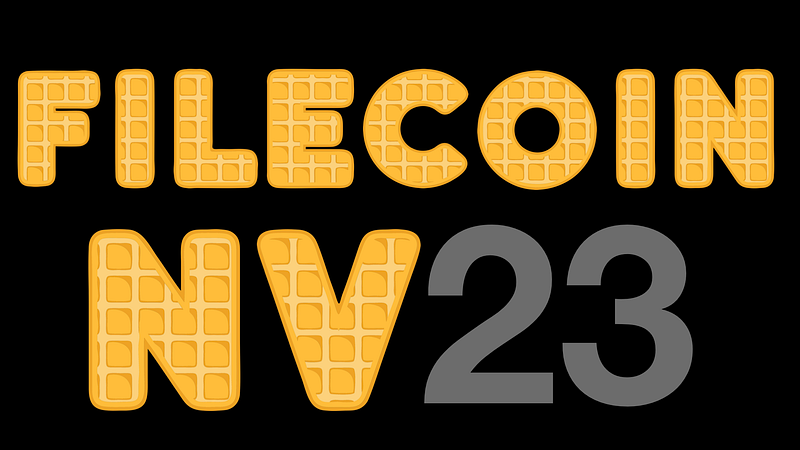

FilOz Blog
Filecoin’s nv23 Waffle Upgrade: Faster, Smarter, and More Dapp Developer-Friendly

Orjan Roren(@Phi-rjan) · Follow
Get ready for the next network upgrade in Filecoin! Network Version 23, codenamed Waffle 🧇, is set to roll out on mainnet tomorrow August 6, 2024. This update brings several important improvements to the Filecoin network.
So what’s new in the Filecoin network version 23? Let’s take a look at some of the key Filecoin Improvement Proposals (FIPs) shipping in this network upgrade:
🏎️ FIP-0086: Soft Launch of Fast Finality (F3)
You might have heard tidbits about Fast Finality before, as the research and speccing out this improvement has been in the works for a while, and now we are taking the first step towards bringing the finality time down with the soft launch of Fast Finality (F3). F3 speeds up finality by 450X (from previously 900 epochs, down to ~2 epochs or so), and finality is actually finality, which makes transaction completions extremely fast.
This network upgrade enables us to do passive testing on the mainnet, and ensure that we can ship this as a full implementation in the next network upgrade later this year as part of network version 24. After a full rollout, we expect tremendous UX improvements for token holders and dapp users. One can also write a client/bridge that is trustless, sends messages over the network, listens to the ambient noise, and asserts that the head has been finalized and run it at a very low cost, since you do not have to run a full node in order to assert finality.
Check out this recent video talking about Fast Finality in the context of bridge building to other networks to learn more.
🪢 FIP-0091: Support for Legacy Ethereum Transactions
While Filecoin already supports the newest transaction type used in Ethereum, this Filecoin Improvement Proposal adds support for two earlier versions. This might sound technical, but the implications are quite exciting.
First, this change would allow developers to easily bring more existing Ethereum contracts to Filecoin. Many popular smart contracts were originally deployed using these older transaction types, and their deployment information is publicly available. With FIP-0091, developers could simply redeploy older Ethereum contracts to Filecoin, bringing tried-and-tested contracts without any fuss.
Moreover, some clever contracts rely on these older transaction types to ensure they get the same address no matter which blockchain they’re deployed on. This is particularly useful for projects that want to maintain consistency across multiple networks. Filecoin will now be compatible with this approach, potentially attracting more cross-chain projects to the network.
But it’s not just about developers. This improvement also makes life easier for everyday users! It allows people to use popular Ethereum wallets, like Coinbase Wallet, to interact with Filecoin, meaning more accessibility and a smoother user experience for those already familiar with Ethereum tools.
In essence, FIP-0091 is about making Filecoin more accessible to the wider Ethereum ecosystem, inviting more developers, projects, and users to explore what Filecoin has to offer. By embracing compatibility with these legacy transaction types, Filecoin is positioning itself as a welcoming and versatile platform in the ever-evolving blockchain landscape.
🤖 FIP-0092: Non-Interactive Proof of Replication (NI-PoRep)
Non-Interactive Proof of Replication (NI-PoRep) simplifies and enhances the process of adding capacity to the Filecoin network. At its core, NI-PoRep simplifies how storage providers prove they’ve correctly set up new storage space. Instead of waiting for the network to provide a challenge, storage providers can now generate their own challenges locally. This might sound like a small change, but it has significant implications for storage providers.
Currently, adding new storage involves two steps with a waiting period in between. With NI-PoRep, this becomes a single, seamless step. This not only makes the process faster, reducing the waiting time known as “WaitSeed” from 90 minutes down to 0, but it also reduces message costs, as storage providers now only need to send a single message to onboard capacity to the network instead of two previously.
NI-PoRep also enables a clear separation between storage and computation tasks. This opens up new possibilities for specialized services within the Filecoin ecosystem. For instance, it could allow for “Sealing-as-a-Service” providers who focus solely on the computational aspects of preparing storage, without needing to interact directly with the Filecoin network. NI-PoRep also provides more flexibility for storage providers. When using the Non-Interactive PoRep pipeline, they can choose at which time of the day their sectors will be proven on the network, giving them better control over their operational schedule.
While NI-PoRep does require more computational work during the onboarding process, the benefits in terms of flexibility, simplicity, and potential for new services make it an exciting development for Filecoin. It represents another step in Filecoin’s ongoing evolution, aiming to make the network more efficient, flexible, and accessible to a wider range of participants.
🤝 Network Upgrades = Multi-team effort 💪
While the mentioned Filecoin Improvement Proposals above were only a subset of all the FIPs landing in this network upgrade, it is actually a total of 7 FIPs that have been implemented in this upgrade.
Implementing all these proposals has been an effort by multiple teams, and we would like to give an extra shoutout to Ramo for the implementation work and testing efforts around Non-Interactive PoRep, and Elliptic Research for the Proofs implementation of Non-Interactive PoRep. Additionally, the Forest team from ChainSafe helped with implementing Filecoin Improvement Proposals and interoperability testing between clients.
Network Version 23 represents a significant step forward for Filecoin, particularly in preparing for reducing finality times and improving interoperability with Ethereum. The Lotus release with more implementation details for this network upgrade can be found here. As we move past this upgrade, the community is already looking forward to Network Version 24 later this year. Stay tuned for more updates as we continue to build the future of decentralized storage!